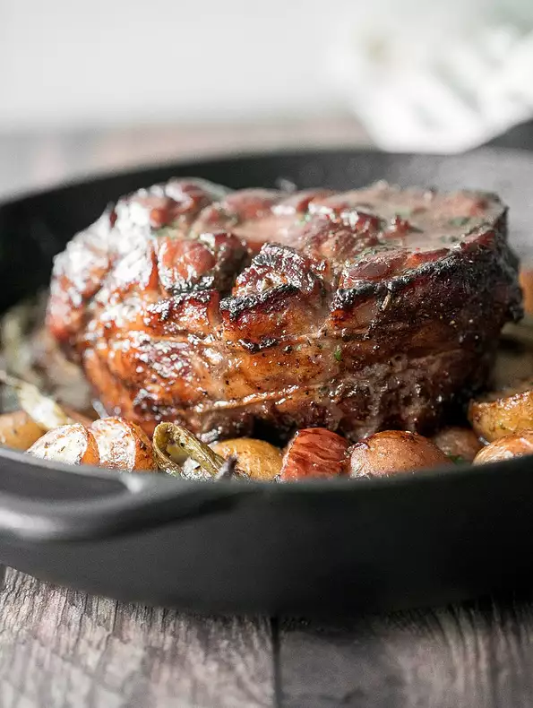

Meat Candy

Meat Candy(Steak)
Ingredients
- 1 pinch cayenne pepper
- 2 cups brown sugar, or as needed
- 2 (14 ounce) packages little smoked sausages
- 1 (16 ounce) package bacon slices, cut into thirds (or as needed)
- 1 box toothpicks
Preparation Steps
-
Preheat oven to 400 degrees F (200 degrees C). Line a large baking dish with aluminum foil
-
Stir cayenne pepper into brown sugar in a bowl. Wrap each smoked sausage in a piece of bacon; secure each with a toothpick. Arrange wrapped sausages into prepared baking dish. Pack brown sugar around wrapped sausages to cover by about 1/2 inch. Cover pan tightly with aluminum foil.
-
Bake in the preheated oven for 20 minutes. Increase oven heat to 450 degrees F (230 degrees C). Remove aluminum foil from pan.
-
Continue baking in the hot oven until brown sugar has melted and thickened, 30 to 40 minutes.